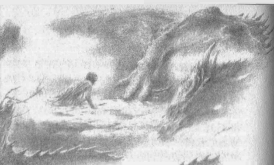
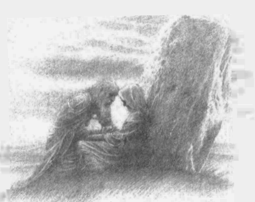

18
Níniel kaçarken Túrin kıpırdanmaya başlamıştı, içinde buunduğu derin karanlıkta, Níniel’in uzaktan seslendiğini duymuştu sanki; ama Glaurung öldüğünde kara baygınlığı geçti ve bir kez daha derin derin nefes almaya başladı içini çekti ve büyük bitkinlik içinde uykuya daldı. Ama şafaktan önce hava iyice soğudu ve Túrin uykusunda döndü ve Gurthang’ın kabzası yan tarafına battı ve aniden Túrin uyandı. Gece geçiyordu ve havada sabahın nefesi vardı; Túrin, zaferini ve elindeki yakıcı zehri hatırlayarak ayağa fırladı. Elini kaldırıp baktı ve şaşırdı. Çünkü ıslak, beyaz bir bezle bağlanmıştı ve acımıyordu; ve kendi kendine şöyle dedi: “Neden biri bu şekilde yarama baksın, ama sonra beni yıkıntıların ve ejderha kokusunun ortasında, soğukta yatmaya bıraksın? Ne tür tuhaf şeyler oldu?”
Sonra yüksek sesle seslendi, ama yanıt gelmedi. Çevresinde her şey karanlık ve kasvetliydi ve bir ölüm kokusu vardı. Túrin eğilip kılıcını aldı, kılıç sağlamdı, kenarlarındaki ışık solmamıştı. “Glaurung’un zehri pisti,” dedi, “ama sen benden güçlüsün, Gurthang. Tüm kanı içersin. Zafer senin. Ama gel! Yardım aramaya gitmeliyim. Vücudum bitkin ve iliklerim üşüyor.”
Sonra Glaurung’a sırtını döndü ve onu çürümeye bıraktı; ama oradan uzaklaşırken her adımı daha da ağırlaşıyordu sanki ve Túrin düşündü: “Belki Nen Girith’te beni bekleyen izcilerden birini bulurum. Ama keşke bir an önce kendi evime gitsem, Níniel’in nazik ellerini ve Brandir’in becerisini hissetsem!” Ve böylece, sonunda, Gurthang’a yaslana yaslana yürüyerek, sabahın gri ışığında Nen Girith’e geldi ve insanlar onun cesedini bulmak için yola koyulmak üzereyken, onu önlerinde buldular.
Sonra, bunun Túrin’in huzursuz ruhu olduğunu sanarak dehşete kapıldılar ve kadınlar haykırarak gözlerini kapattı. Ama Túrin, “Hayır, ağlamayın, memnun olun!” dedi. “Bakın! Canlı değil miyim? Korktuğunuz ejderhayı öldürmedim mi?”
Bunun üzerine insanlar Brandir’e döndüler ve bağırdılar: “Aptal, hikayelerin yalan, onun öldüğünü söyledin. Delirdiğini söylememiş miydik sana?” Brandir dehşete kapıldı, Túrin’e korku dolu gözlerle baktı ve hiçbir şey söyleyemedi.
Ama Túrin ona şöyle dedi: “Demek oraya gelen ve elimi saran şendin, öyle mi? Sana teşekkür ederim. Ama, baygınlığı ölümden ayırt edemiyorsan, becerin azalıyor.” Sonra insanlara döndü: “Onunla böyle konuşmayın, aptallar. Hanginiz daha iyisini yapabilirdi? En azından, siz oturup sızlanırken, onun savaş meydanına gelecek cesareti vardı!
“Ama şimdi Handir’in oğlu, gel! Öğrenmek istediğim başka şeyler var. Neden sen ve Ephel’de bıraktığım bunca insan burada? Ben sizin hatırınıza ölüm tehlikesine atılabiliyorsam, ben yokken bana itaat edilmeli değil mi? Hem, Níniel nerede? En azından onu buraya getirmediğini, onun emanet ettiğim yerde, evimde, onu koruyacak gerçek erkeklerin yanında olduğunu umabilirim, değil mi?”
Kimse ona yanıt vermeyince, “Hadi ama, Níniel’in nerede olduğunu söyleyin!” diye haykırdı. “Zira ilk önce onu görmek istiyorum; gece yaptığım işlerin hikayesini ilk önce ona anlatacağım.”
Ama insanlar yüzlerini ondan çevirdiler ve Brandir sonunda, “Níniel burada değil,” dedi.
İyi o zaman, dedi Túrin. “Ben de o zaman evime giderim. Beni taşıyacak at var mı? Ya da, bir sedye daha iyi olurdu. Bitkin düştüm.”
“Hayır, hayır!” dedi Brandir, acılı bir yürekle. “Evin boş. Níniel orada değil. O öldü.”
Ama kadınlardan biri —Brandir’i pek sevmeyen, Dorlas’ın karısı— tiz bir sesle bağırdı: “Onu dinleme, beyim! Çünkü o deli. Senin öldüğünü bağıra çağıra geldi ve buna iyi haber dedi. Ama sen yaşıyorsun. O zaman, Níniel hakkındaki hikayesi, onun öldüğü ve daha da kötüsü, neden doğru olsun?”
Bunun üzerine Túrin Brandir’e doğru yürüdü: “Demek benim ölümüm iyi haber, öyle mi?” diye bağırdı. “Evet, onu her zaman benden kıskanıyordun, biliyordum zaten. Şimdi onun öldüğünü söylüyorsun. Daha kötüsü? Kötülüğün içinde ne yalan uydurdun, Yumru-ayak? Başka silah kullanamadığından, bizi pis sözlerinle mi öldüreceksin?”
Bunun üzerine Brandir’in yüreğindeki öfke acımayı yok etti ve bağırdı: “Deli mi? Hayır, deli olan sensin, kara talihin Kara Kılıç’ı! Bu bunak insanların tamamı da öyle. Ben yalan söylemiyorum! Níniel öldü, öldü, öldü! Onu Teiglin’de ara!”
Bunun üzerine Túrin, buz kesmiş bir halde kalakaldı. “Nereden biliyorsun?” dedi usulca. “Nasıl becerdin bunu?”
“Biliyorum, çünkü atladığını gördüm,” diye yanıt verdi Brandir. “Ama bunu asıl beceren sendin. O senden kaçıyordu, Húrin oğlu Túrin ve seni bir daha görmemek için kendini Cabed-en-Aras’a fırlattı. Níniel! Níniel, ha? Hayır, Húrin kızı Niënor.”
Bunun üzerine Túrin onu yakalayıp sarstı; çünkü o sözlerde, kaderinin ayaklarının ona yetiştiğini duymuştu, ama, tıpkı ölümcül bir biçimde yaralanmış bir hayvanın, ölene dek çevresindeki her şeye saldırması gibi, dehşet ve gazapla dolu yüreği o sözleri kabullenemiyordu.
“Evet, ben Húrin’in oğlu Túrin’im,” diye haykırdı. “Bunu uzun zaman önce tahmin ettin. Ama kız kardeşim Niënor hakkında hiçbir şey bilmiyorsun. Hiçbir şey! O Saklı Krallık’ta yaşıyor ve güvende. Karımın ve şimdi de benim aklımızı kaçırtmak için, kendi rezil zihninden uydurduğun bir yalan bu. Seni aksak şeytan —ölüme dek ikimizin de peşini bırakmayacak mısın?”
Ama Brandir onu silkip attı. “Bana dokunma!” dedi. “Sayıklamayı da bırak. Karım dediğin kadın sana geldi, yarana baktı ve sen onun çağrısına yanıt vermedin. Ama biri sana yanıt verdi. Ejderha Glaurung, sanırım ikinizi de büyüleyip sonunuza götürdü. Ölmeden önce şöyle konuştu: ‘Húrin’in kızı Niënor, işte ağabeyin: düşmanlarına hain, dostlarına vefasız, soydaşları için bir bela, Húrin oğlu Túrin.’” Sonra aniden çılgın kahkahalara boğuldu.“İnsanların ölüm döşeğinde doğruyu söylediği anlatılır,” dedi gülerek. “Anlaşılan, bir ejderha için de böyle. Húrin oğlu Túrin, soydaşların ve seni barındıran herkes için bir belasın!”
Bunun üzerine Túrin Gurthang’ı kavradı ve gözlerine aşağılık bir ışık doldu. “Peki, senin için ne diyecekler, Yumru-ayak?” dedi yavaşça. “Arkamdan ona gizlice benim gerçek ismimi söyleyen kimdi? Onu ejderhanın şerrine götüren kimdi? Kim kenarda bekleyip, onun ölmesine izin verdi? Kim buraya gelip, bu dehşeti hemen anlattı? Şimdi bana bakıp böbürlenecek olan kim? İnsanlar ölmeden önce doğruyu mu söylermiş? O zaman hemen konuş.”
Bunun üzerine, Túrin’in yüzünde kendi ölümünü gören Brandir, bastonundan başka silahı olmamasına rağmen, kıpırdamadan durdu ve sinmedi. “Tesadüf eseri olan her şey, anlatılamayacak kadar uzun bir hikaye ve ben senden bıktım. Ama bana iftira ediyorsun, Húrin’in oğlu. Glaurung sana iftira mı etti? Beni öldürürsen, herkes onun sözlerinin iftira olmadığını görecek. Ama ben ölmekten korkmuyorum, çünkü o zaman sevdiğim Níniel’i aramaya gidebilirim ve belki onu Deniz’in ötesinde bir kez daha bulurum.”
“Níniel’i ara!” diye haykırdı Túrin. “Hayır, Glaurung’u bulacaksın, çünkü aynı türden olanlar birlikte yaşar. Ruh ikizin Solucanla yatacaksın ve onunla aynı karanlıkta çürüyeceksin!” Sonra Gurthang’ı kaldırdı, Brandir’i biçti ve öldürdü. Ama insanlar gözlerini bu işten sakladılar ve o dönüp Nen Girith’ten uzaklaşırken, dehşetle ondan kaçtılar.
Sonra Túrin aklını yitirmiş gibi yabani ormana daldı, bir Orta Dünya’ya ve tüm insan hayatına küfrediyor, bir Níniel’e yakarıyordu. Ama sonunda ıstırabından kaynaklanan delilik geçtiğinde, bir süre oturup yaptıklarını düşündü ve kendi sesinin haykırdığını duydu: “O Saklı Krallık’ta yaşıyor ve güvende!” Ve şimdi, tüm hayatı yıkılmış olsa da, oraya gitmesi gerektiğini düşündü; çünkü Glaurung’un yalanları onu her zaman yolundan saptırmıştı. Bu yüzden kalktı ve Teiglin Geçitlerine gitti ve Haudh-en-Elleth’ten geçerken haykırdı: “Ejderhaya kulak vermemin bedelini acı acı ödedim, Ey Finduilas! Şimdi bana öğüt ver!”
Ama, daha bağırırken, iyice silahlanmış on iki avcının geçitleri aştığını gördü ve gelenler elfti, yaklaştıklarında bir tanesini tanıdı, çünkü Thingol’un başavcısı Mablung’du. Mablung onu selamladı: “Túrin! Nihayet karşılaştığımız iyi oldu. Seni aramaktaydım ve seneler sana ağır gelmiş olsa da, seni canlı bulduğuma memnunum.”
“Ağır!” dedi Túrin. “Evet, Morgoth’un ayakları kadar ağır. Ama beni canlı bulduğuna sevindiysen, Orta Dünya’da bu fikirde olan son kişisin. Neden?”
“Aramızda saygı görmektesin zira,” diye yanıt verdi Mablung; “ve her ne kadar pek çok tehlikeden kurtulmuş olsan da, sonunda ölmenden korkuyordum. Glaurung’un öne çıkışını seyrettim ve şer dolu amacına ulaştığını ve artık efendisine döneceğini sandım. Lâkin o Brethil’e döndü; ve keza, gezginlerden, Nargothrond’un Kara Kılıcı’nın orada tekrar ortaya çıktığını ve orkların oranın sınırlarından ölüm gibi sakındığını öğrendim. İşte o vakit içim dehşetle doldu ve kendi kendime şöyle dedim: ‘Eyvah! Glaurung Túrin’i bulmak için orklar’ının gitmeye cüret edemediği yere gidiyor.’ Bu yüzden, seni uyarmak ve sana yardım etmek için elimden geldiğince çabuk geldim.”
“Çabuk, ama yeterince çabuk değil,” dedi Túrin. “Glaurung öldü.”
Bunun üzerine elfler ona hayretle baktılar ve, “Büyük Solucan’ı öldürdün! İsmin elfler ve insanlar arasında her daim övülecek!” dediler.
“Umurumda değil,” dedi Túrin. “Çünkü yüreğim de öldü. Ama madem Doriath’tan geldiniz, bana ailemden haber verin. Çünkü Dor-lómin’deyken bana onların Saklı Krallık’a kaçtığını söylediler.”
Elfler yanıt vermedi, ama sonunda Mablung konuştu: “Ejderhanın gelişinden evvelki sene öyle yaptılar. Lâkin, heyhat, artık orada değiller!” Bunun üzerine Túrin’in yüreği durdu, çünkü sonuna dek peşini bırakmayacak olan, talihin ayak seslerini duyabiliyordu. “Konuşmaya devam et!” diye haykırdı. “Çabuk ol!”
“Seni aramak için yabana gittiler,” dedi Mablung. “Biz gitmemelerini öğütledik; ama Kara Kılıç’ın sen olduğu öğrenilince, ille Nargothrond’a yol almak istediler; ve Glaurung geldi ve tüm korumaları dağıldı. O vakitten beri Morwen’i gören olmadı; ama Niënor’un üzerine bir uyuşukluk gelmişti ve yabani bir geyik gibi ormanın içlerinden kuzeye kaçtı ve kayboldu.” Bunun üzerine Túrin yüksek ve tiz bir kahkaha atarak elfleri şaşırttı. “Ne şaka, değil mi?” diye bağırdı. “Ey güzel Niënor! Demek Doriath’tan ejderhaya ve ejderhadan bana kaçtı. Talihin ne tatlı bir lütfu! Böğürtlen kadar esmerdi, saçları simsiyahtı; ve bir elf çocuğu kadar narindi, başkasıyla karıştırmak imkansızdı!”
Bunun üzerine Mablung şaşırdı: “Lâkin burada bir hata var. Kız kardeşin anlattığın gibi değildi. Uzun boyluydu, gözleri maviydi, saçları altın rengiydi, babası Húrin’in kadın hali gibiydi. Onu görmüş olamazsın!”
“Olamaz mıyım, olamaz mıyım, Mablung?” diye haykırdı Túrin. “Ama neden olmasın? Çünkü, bak, ben körüm! Bilmiyor muydun? Kör, kör, çocukluğumdan beri Morgoth’un kara sisinde el yordamı ile ilerliyorum! Bu yüzden, bırakın beni! Gidin, gidin! Doriath’a dönün, umarım kış kurutur orayı! Menegroth’a lanet olsun! Görevinize lanet olsun! Eksik olan tek şey buydu. Artık gece çöküyor.”
Sonra, rüzgar gibi kaçtı onlardan ve elflerin içi hayret ve korkuyla doldu. Ama Mablung, “Bizim bilmediğimiz, tuhaf ve korkunç bir şey olmuş,” dedi. “Onu takip edelim, elimizden geliyorsa yardımcı olalım: çünkü onun çılgına döndüğünü ve aklının yerinde olmadığını biliyoruz.”
Ama Túrin onlardan önce koşup Cabed-en-Aras’a vardı ve kıpırdamadan durdu; ve suların kükremesini duydu ve yakındaki, uzaktaki, tüm ağaçların kurumuş olduğunu, yazın ilk günlerinde kış çökmüş gibi, kuru yapraklarının yasla düşmekte olduğunu gördü.
“Cabed-en-Aras, Cabed Naeramarth!” diye haykırdı. “Níniel’in yıkandığı sularını kirletmek istemem. Çünkü bütün işlerim uğursuz oldu ve en kötüsü de en sonuncusuydu.”
Sonra kılıcını çekti ve, “Selam Gurthang, ölüm demiri, artık yalnızca sen kalacaksın!” dedi. “Ama, seni kullanan elden başka ne bey, ne sadakat bilirsin? Sen hiçbir kandan kaçınmazsın. Túrin Turambar’ı alır mısın? Beni çabuk öldürür müsün?”
Ve kılıç, soğuk bir sesle çınlayarak yanıtladı: “Evet, kanını içerim, ki efendim Beleg’in ve haksız yere öldürülen Brandir’in kanını unutabileyim. Seni çabuk öldüreceğim.”
Sonra Túrin kabzayı yere yasladı ve kendini Gurthang’ın ucuna fırlattı ve kara kılıç onun canını aldı.
Ama Mablung geldi ve ölü yatan Glaurung’un iğrenç şekline, sonra Túrin’e baktı ve üzüldü, Nirnaeth Arnoediad’da gördüğü Húrin’i ve ailesinin korkunç kaderini düşündü. Elfler orada dururken, insanlar ejderhaya bakmak için Nen Girith’e geldiler ve Túrin Turambar’ın hayatının nasıl bir sona vardığını görünce ağladılar; ve sonunda Túrin’in sözlerinin sebebini öğrenen elfler dehşete düştüler. Mablung acı acı konuştu: “Húrin’in Çocuklarının kaderine ben de karıştım ve böylece, sözlerimle, sevdiğim birini öldürdüm.”
Sonra Túrin’i yerden kaldırdılar ve kılıcının paramparça olduğunu gördüler. Böylece, sahip olduğu her şey yok olmuş oldu.
Pek çok elin çabasıyla odun topladılar ve yüksekçe yığdılar ve büyük bir ateş yakıp ejderhanın leşini yok ettiler, ta ki ejderha küle dönene, kemikleri ufalanana kadar, ve o mekan ondan sonra hep çıplak ve kıraç kaldı. Ama Túrin’i, öldüğü yerde, yüksek bir höyüğün içine koydular ve Gurthang’ın tüm parçalarını da yanına bıraktılar. Ve bütün bunlar bittiği zaman, elf ve insan ozanları ağıt yaktı, Turambar’ın yiğitliğini ve Níniel’in güzelliğini anlattılar. Sonra büyük, gri bir taş getirildi ve höyüğün üzerine yerleştirildi; ve elfler taşın üzerine, Doriath rünleri ile şunları kazıdı:
TÚRİN TURAMBAR DAGNİR GLAURUNGA
ve altına şunları eklediler:
NİËNOR NÍNİEL
Ama Niënor orada değildi, Teiglin’in soğuk sularının onu nereye götürdüğü de öğrenilemedi.
Húrin’in Çocuklarının Hikayesi, Beleriand’ın bütün türkülerinin en uzunu, burada sona eriyor.
Túrin ile Niënor’un ölümlerinden sonra, Morgoth kötü amacını daha da ilerletmek için Húrin’i tutsaklıktan salıverdi. Húrin dolana dolana Brethil Ormanı’na vardı ve akşam vakti Teiglin Geçitlerine, Glaurung’un yakıldığı yere, Cabed Naeramarth’ın kenarına dikilmiş büyük taşa geldi. Olanlar aşağıda anlatılmaktadır.
Ama Húrin taşa bakmadı, çünkü orada yazılı olanları biliyordu; ve gözleri yalnız olmadığını görmüştü. Taşın gölgesinde, dizleri üzerine çöküp eğilmiş biri vardı. Yaşlılıktan tükenmiş evsiz bir gezgin gibi görünüyordu, Húrin’in gelişine aldırmayacak kadar bitkindi; ama üzerindeki paçavralar bir kadın elbisesinin kalıntılarıydı. Húrin orada uzun uzun, sessizce durdu ve sonunda kadın lime lime başlığını arkaya atarak, uzun zaman avlanmış bir kurdunki gibi perişan, aç yüzünü yavaşça kaldırdı. Kırlaşmıştı, keskin bir burnu, kırık dişleri vardı ve ince eliyle pelerininin göğsünü pençeledi. Ama aniden gözleri Húrin’inkilere dikildi ve o zaman Húrin onu tanıdı; çünkü artık vahşi ve korku dolu olsalar da, hâlâ içlerinde dayanılmaz bir ışık parıldıyordu: uzun zaman önce ona adını kazandıran elf ışığı, Eledhwen, eski günlerin ölümlü kadınlarının en gururlusu.
“Eledhwen! Eledhwen!” diye haykırdı Húrin; ve Eledhwen kalkıp, öne doğru sendeledi, Húrin onu yakalayıp kollarına aldı.
“Sonunda geldin,” dedi Morwen. “Çok uzun zaman bekledim.”
“Karanlık bir yoldu. Gelebildiğimde geldim,” diye yanıt verdi Húrin.
“Ama geç kaldın,” dedi Morwen, “çok geç. Onları kaybettik.”
“Biliyorum,” dedi Húrin. “Ama seni kaybetmedim.”
“Az kaldı,” dedi Morwen. “Bittim artık. Güneşle gideceğim. Onları kaybettik.” Pelerinini kavradı. “Çok az zaman kaldı,” dedi. “Biliyorsan, anlat bana! Kızımız oğlumuzu nasıl buldu?”
Ama Húrin yanıt vermedi ve Morwen’i kollarına alarak taşın yanına oturdu; ve bir daha konuşmadılar. Güneş battı ve Morwen içini çekerek Húrin’in elini tuttu ve kıpırtısız kaldı; ve Húrin onun öldüğünü anladı.
